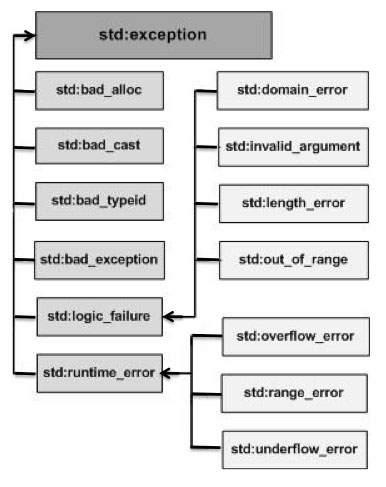

An exception is a problem that arises during the execution of a program. A C++ exception is a response to an exceptional circumstance that arises while a program is running, such as an attempt to divide by zero.
Exceptions provide a way to transfer control from one part of a program to another. C++ exception handling is built upon three keywords: try, catch, and throw.
throw − A program throws an exception when a problem shows up. This is done using a throw keyword.
catch − A program catches an exception with an exception handler at the place in a program where you want to handle the problem. The catch keyword indicates the catching of an exception.
try − A try block identifies a block of code for which particular exceptions will be activated. It's followed by one or more catch blocks.
Assuming a block will raise an exception, a method catches an exception using a combination of the try and catch keywords. A try/catch block is placed around the code that might generate an exception. Code within a try/catch block is referred to as protected code, and the syntax for using try/catch as follows −
try {
// protected code
} catch( ExceptionName e1 ) {
// catch block
} catch( ExceptionName e2 ) {
// catch block
} catch( ExceptionName eN ) {
// catch block
}
You can list down multiple catch statements to catch different type of exceptions in case your try block raises more than one exception in different situations.
Exceptions can be thrown anywhere within a code block using throw statement. The operand of the throw statement determines a type for the exception and can be any expression and the type of the result of the expression determines the type of exception thrown.
Following is an example of throwing an exception when dividing by zero condition occurs −
double division(int a, int b) {
if( b == 0 ) {
throw "Division by zero condition!";
}
return (a/b);
}
The catch block following the try block catches any exception. You can specify what type of exception you want to catch and this is determined by the exception declaration that appears in parentheses following the keyword catch.
try {
// protected code
} catch( ExceptionName e ) {
// code to handle ExceptionName exception
}
Above code will catch an exception of ExceptionName type. If you want to specify that a catch block should handle any type of exception that is thrown in a try block, you must put an ellipsis, ..., between the parentheses enclosing the exception declaration as follows −
try {
// protected code
} catch(...) {
// code to handle any exception
}
The following is an example, which throws a division by zero exception and we catch it in catch block.
#include <iostream> using namespace std; double division(int a, int b) { if( b == 0 ) { throw "Division by zero condition!"; } return (a/b); } int main () { int x = 50; int y = 0; double z = 0; try { z = division(x, y); cout << z << endl; } catch (const char* msg) { cerr << msg << endl; } return 0; }
Because we are raising an exception of type const char*, so while catching this exception, we have to use const char* in catch block. If we compile and run above code, this would produce the following result −
Division by zero condition!
C++ provides a list of standard exceptions defined in <exception> which we can use in our programs. These are arranged in a parent-child class hierarchy shown below −

Here is the small description of each exception mentioned in the above hierarchy −
| Sr.No | Exception & Description |
|---|---|
| 1 |
std::exception An exception and parent class of all the standard C++ exceptions. |
| 2 |
std::bad_alloc This can be thrown by new. |
| 3 |
std::bad_cast This can be thrown by dynamic_cast. |
| 4 |
std::bad_exception This is useful device to handle unexpected exceptions in a C++ program. |
| 5 |
std::bad_typeid This can be thrown by typeid. |
| 6 |
std::logic_error An exception that theoretically can be detected by reading the code. |
| 7 |
std::domain_error This is an exception thrown when a mathematically invalid domain is used. |
| 8 |
std::invalid_argument This is thrown due to invalid arguments. |
| 9 |
std::length_error This is thrown when a too big std::string is created. |
| 10 |
std::out_of_range This can be thrown by the 'at' method, for example a std::vector and std::bitset<>::operator[](). |
| 11 |
std::runtime_error An exception that theoretically cannot be detected by reading the code. |
| 12 |
std::overflow_error This is thrown if a mathematical overflow occurs. |
| 13 |
std::range_error This is occurred when you try to store a value which is out of range. |
| 14 |
std::underflow_error This is thrown if a mathematical underflow occurs. |
You can define your own exceptions by inheriting and overriding exception class functionality. Following is the example, which shows how you can use std::exception class to implement your own exception in standard way −
#include <iostream> #include <exception> using namespace std; struct MyException : public exception { const char * what () const throw () { return "C++ Exception"; } }; int main() { try { throw MyException(); } catch(MyException& e) { std::cout << "MyException caught" << std::endl; std::cout << e.what() << std::endl; } catch(std::exception& e) { //Other errors } }
This would produce the following result −
MyException caught C++ Exception
Here, what() is a public method provided by exception class and it has been overridden by all the child exception classes. This returns the cause of an exception.